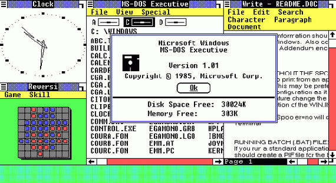

Microsoft Windows 1.0
1985
CREATOR
Microsoft
ABOUT
Windows 1.0 was the first version of the Microsoft Windows line. The development of Windows began after Bill Gates, founder of Microsoft, saw a demonstration at the COMDEX 1982 of VisiCorp’s Visi On, a graphical user interface software for IBM PC compatible computers. Windows was released to the public on November 10, 1983, required two floppy disk drives and 192 KB of RAM. The scroll bar had arrows that went up and down and an elevator that you could drag.
